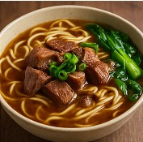

Beef Noodle Soup (牛肉面)

Noodle Dough
- 3 cups flour
- 1 tsp salt
- 1 cup water
Soup Base
- 1 lb beef shank
- 4 slices ginger
- 2 scallions
- 2 tomatoes
- 1 tbsp light soy sauce
- 1 tbsp dark soy sauce
- 1 star anise
- Salt to taste
Instructions
- Make and rest dough.
- Simmer soup 2 hours with beef.
- Hand-pull noodles and boil fresh.
Other Recipes You Might Like